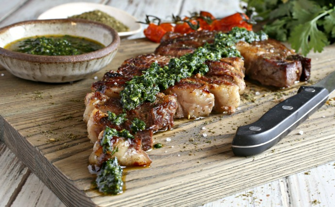

Garlic Crusted Steak

A delicious and much-loved recipe passed onto me from my friend, RD Baker
Fresh parsley, slightly crunchy garlic, and juicy steak.
I cooked this for my family periodically in high school
when we lived in the Colorado Rockies.
I would go out onto the wrap-around deck,
look out over the lake under starlight,
listen to the creek at the bottom of the valley,
and enjoy getting the steaks just right.
Ingredients
- 4 steaks
- 4 large cloves (minced garlic equivalent okay)
- 1 teaspoon salt
- 1 teaspoon black pepper
- 1/4 cup finely chopped fresh parsley
- 1/4 cup extra-virgin olive oil
- 2 teaspoons basalmic vinegar
- (add more salt if desired)
Steps
- On a cutting board, finely chop the garlic
- Then sprinkle with salt
- Use the side of a knife to smash the garlic into a paste
- Put the garlic paste into a small bowl
- Add the remaining ingredients (except meat) and mix together
- Smear the paste evenly over both sides of each steak
- Let the steaks stand at room temperature for 20-30 minutes before grilling.
- Grill on indirect high-heat (450-550)
- Enjoy!